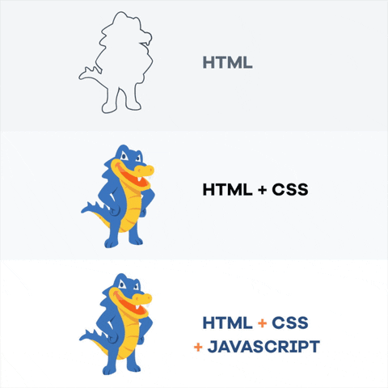
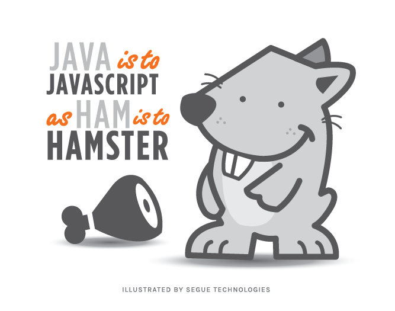
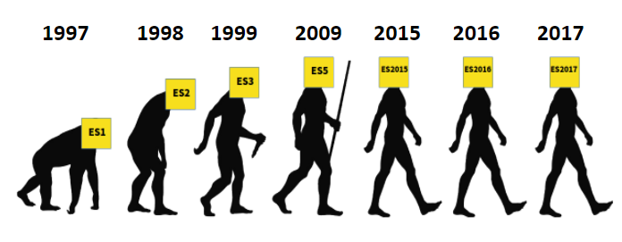
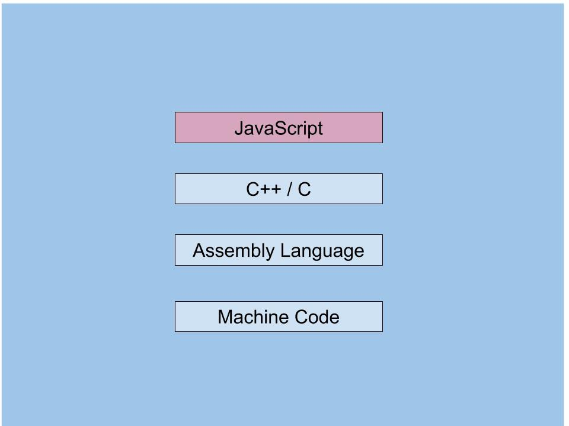

👩🏫 JS Basics 01 - Qu'est-ce que JavaScript
Objectifs
- Comprendre ce qu'est JavaScript
- Découvrir ce que tu peux faire avec
Introduction
Pour commencer ton périple, et avant de coder, tu dois comprendre ce qu'est JavaScript, et comment il fonctionne.
Dans cette quête, tu vas voir ce qu'est JavaScript, quelle est son histoire, et ce que tu peux faire avec.
Sommaire
Définition
Tu sais que l'HTML définit la structure d'une page web. Le CSS donne du style aux pages.
Mais du coup, quel est le rôle du JS ici ? C'est un langage de programmation qui ajoute de l'interactivité aux pages web.

Source: HostGator on GiphyL'histoire de JS
JavaScript a été conçu pour être utilisé côté frontend (dans le navigateur donc). Mais depuis 2009, il est possible de créer du code backend (côté serveur donc) avec NodeJS ! 🔥
🤓 Selon la légende, Brendan Eich a écrit JavaScript en 10 jours
📚 Pour connaître l'historique du JS, regarde cette courte vidéo:
Bien que leurs noms semblent similaires, JavaScript est totalement différent de Java. JS est appelé JavaScript car quand il a été créé, Java était populaire, donc les créateurs ont pensé qu'ajouter Java dans son nom le rendrait plus accessible.

Source: Segue Technologies
ECMAScript Standards
Comme tout langage de programmation, JavaScript a son lot de règles et de spécifications. Ces specs sont implémentées dans un standard appelé ECMAScript (ES). Chaque nouvelle version d'ECMAScript vient avec des nouvelles features, des nouvelles normes sur la façon d'écrire le JavaScript. Tu as pu entendre parler de ES6 qui a été introduit en 2015 et a ajouté de nombreuses fonctionnalités au langage. JavaScript à partir d'ES6 et au-delà (ES6+) est parfois appelé le "JavaScript moderne".

image source: https://engineering.carsguide.com.au/javascript-context-ecmascript-84d709ef9165
Si tu es curieux, tu peux jeter un coup d’œil aux spécifications ici.
Ce lien pointe vers la spécification officielle d'ECMAScript. Ce n'est pas un document accessible pour les débutants. Mais il peut permettre de comprendre comment JS fonctionne "sous le capot". Jette y un coup d'oeil et garde le lien pour y revenir plus tard ;)
Que peut-on faire avec JavaScript?
Eh bien on peut:
- Créer une plateforme de streaming comme Netflix
- Créer des animations 3D
- Créer des jeux
- Créer de l'art
- Créer des robots
- Créer des interfaces pour des navettes spatiales
- Créer un fameux réseau social
- Et encore bien d'autres choses...
Syntaxe de base
Hello World
La manière la plus simple d'expliquer la syntaxe d'un langage de programmation est d'écrire un programme "Hello, World!". "Hello, World!" est un programme qui écrit le texte "Hello, World!".
Le but ? Donner une idée de la structure et de la syntaxe du langage utilisé.
console.log("Hello, World!");
Tu as ici un "Hello, world!" en JS. Ça semble assez simple non ? Si tu es curieux et que tu souhaites voir d'autres programmes "Hello, world!", regarde cet article sur Wikipedia :
Dans cet article, tu verras comment écrire 'Hello, world!' dans différents langages de programmation.
😅 L'un des pires programme "Hello, world!", est celui d'un langage appelé malbolge. Malbolge est un langage de programmation conçu dans l'unique idée de créer un langage horrible et difficile ! Voici un "Hello, world!" en malbolge...
(=<`#9]~6ZY32Vx/4Rs+0No-&Jk)"Fh}|Bcy?`=*z]Kw%oG4UUS0/@-ejc(:'8dc
Comment fonctionne JavaScript ?
JavaScript est ce qu'on appelle un langage haut-niveau. Cela signifie que JavaScript est éloigné du langage machine. Tout le code que l'on exécute sur notre machine est transformé en code binaire (0 et 1). JavaScript est plus proche du langage humain que du langage machine. Un langage de programmation seul est quelque peu inutile, c'est comme parler un langage que personne ne comprend.
Mais, comment JavaScript est transformé en langage machine ? Ton navigateur a le pouvoir de traduire ton code JS en langage machine avec ce qu'on appelle un Moteur JavaScript (JS Engine). Ce moteur (par exemple le moteur V8 dans Google Chrome) va "lire" notre JS et le traduire, ce qui fait que notre ordinateur va le comprendre.

image source : https://medium.com/@zoebai_70369/javascript-engine-368037453a1cRésumé
- JavaScript n'a rien à voir avec Java
- JavaScript est un langage de programmation haut-niveau.
- ECMAScript est le standard qui définit les règles et spécifications de JavaScript
- Tu peux utiliser JavaScript côté frontend et backend (grâce à NodeJS)
Une très bonne ressource qui explique ce qu'est JavaScript
Une autre très bonne ressource qui explique tout ce dont tu as besoin de savoir sur JavaScript.
Ressources partagées sur cette quête
- Je vous recommande le site de Jérémy. C'est très bien expliqué et de plus, c'est en français. Un must...https://www.javascriptdezero.com/module-debutant
- Une autre source tout aussi bien faite !https://www.youtube.com/watch?v=t1ZpiggamPI&list=PLQkrqTy7RjTF9p3uKgjOpcfLcjJ5i2i_7
- Entre le Vanilla, les Linters, les standards Airbnb ou Google, ECMA, Typescript, NodeJS, les transpilers et polyfills… Il y a de quoi se perdre. Voici de quoi y voir plus clair.https://infodocbib.net/2020/12/javascript/
- Funny dungeon-like game to learn / revise JS bases. (+ it's completely free and you don't even need any account)https://codecombat.com/
- Plutôt complet et en français.https://fr.javascript.info/intro
- Une courte introduction en français à l'histoire de Javascript, c'est bien fait et plaisant à regarderhttps://www.youtube.com/watch?v=cdDPQkF7hRA